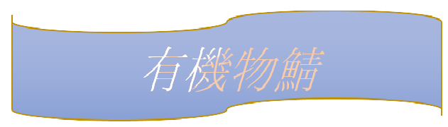
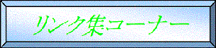

有機物ホームページへようこそあなたは
このサーバーはサバイバルサーバーでpc版は1.12.2から、携帯端末は最新版で入れます。


 安かったoffice2003
安かったoffice2003●参加条件●
12歳以上、荒らさない(TNT、放火、意味もなく鯖に負荷をかける行為等)トランスジェンダーではないこと。以上。
{sinse 2021 10/14 @crafter_yuki(minecraftname)}
| おもしろいリンク集 | １ |
２ | ２ |